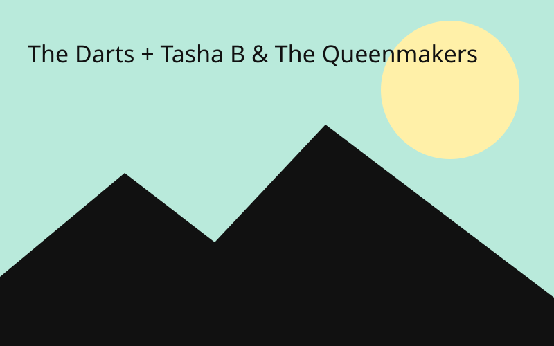

The Darts + Tasha B & The Queenmakers
Le Tetris · Rock garage
L’agenda des concerts rock au Havre.

Le Tetris · Rock garage
 Les Éclats de Minuit
Les Éclats de Minuit2026-11-06 · 20:00
Lille
La Péniche · Rock indépendant
 Brume Électrique
Brume Électrique2026-11-14 · 19:30
Rennes
L’Ubu · post-punk
 Néons sur Loire
Néons sur Loire2026-11-21 · 20:30
Nantes
Indie rock · Le Ferrailleur
 Les Fougères Sonores
Les Fougères Sonores2026-11-28 · 19:00
Brest
La Carène · Shoegaze
 Orage Magnétique
Orage Magnétique2026-12-04 · 20:00
Rouen
Le 106 · Rock alternatif
 Velours Brut
Velours Brut2026-12-11 · 20:30
Paris
Garage rock · La Maroquinerie
 Météores de Craie
Météores de Craie2026-12-18 · 19:30
Caen
Le Cargö · Math rock
 Sillage Rouge
Sillage Rouge2027-01-09 · 20:00
Bordeaux
Indie pop rock · Rock School Barbey
 Les Faubourgs Froids
Les Faubourgs Froids2027-01-16 · 20:30
Toulouse
Cold wave · Le Metronum
 Quartz Sauvage
Quartz Sauvage2027-01-23 · 19:00
Montpellier
Rock psychédélique · Rockstore
 Aube en Distorsion
Aube en Distorsion2027-01-30 · 20:00
Marseille
Le Makeda · Rock indépendant
 Les Ondes de Verre
Les Ondes de Verre2027-02-06 · 19:30
Lyon
Dream pop · Le Marché Gare
 Poussière d’Ampli
Poussière d’Ampli2027-02-13 · 20:30
Grenoble
La Belle Électrique · Stoner rock
 Satellites Ordinaires
Satellites Ordinaires2027-02-20 · 20:00
Clermont-Ferrand
Indie rock · La Coopérative de Mai
 Foudre en Papier
Foudre en Papier2027-02-27 · 19:30
Saint-Étienne
Le Fil · Punk mélodique
 Les Lignes de Fuite
Les Lignes de Fuite2027-03-06 · 20:30
Dijon
La Vapeur · Post-rock
 Cobalt Fiction
Cobalt Fiction2027-03-13 · 20:00
Besançon
La Rodia · Rock alternatif
 Rivages Nocturnes
Rivages Nocturnes2027-03-20 · 19:00
La Rochelle
Indie folk rock · La Sirène
 Fleurs de Mercure
Fleurs de Mercure2027-03-27 · 20:30
Angers
Art rock · Le Chabada
 Transit Fantôme
Transit Fantôme2027-04-03 · 20:00
Tours
Le Temps Machine · Synth-rock
 Lueur Souterraine
Lueur Souterraine2027-04-10 · 19:30
Orléans
L’Astrolabe · post-punk
 Les Chiens de Pluie
Les Chiens de Pluie2027-04-17 · 20:30
Metz
Blues rock · La BAM
 Murmures au Zénith
Murmures au Zénith2027-04-24 · 20:00
Nancy
Indie pop · L’Autre Canal
 Pleine Lune sur l’Aude
Pleine Lune sur l’Aude2027-05-01 · 19:00
Carcassonne
Le Chapeau Rouge · Rock garage
 Fossiles Lumineux
Fossiles Lumineux2027-05-08 · 20:30
Perpignan
Elmediator · Noise rock
 Marées de Cuivre
Marées de Cuivre2027-05-15 · 20:00
Le Mans
L’Oasis · Rock progressif
 Échappée Chromatique
Échappée Chromatique2027-05-22 · 19:30
Poitiers
Indie expérimental · Le Confort Moderne
 Les Astres en Panne
Les Astres en Panne2027-05-29 · 20:30
Limoges
La Fourmi · Rock indépendant
 Cendres & Comètes
Cendres & Comètes2027-06-05 · 20:00
Nîmes
Paloma · Post-hardcore
 Dernier Train pour l’Aurore
Dernier Train pour l’Aurore2027-06-12 · 19:30
Avignon
Alternative rock · L’AJMI